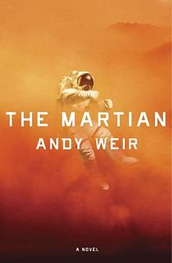
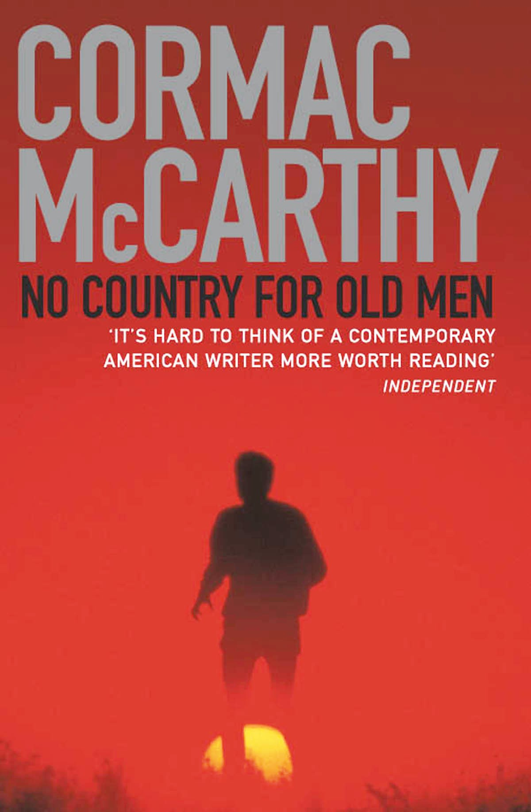

"Sydhartha", by Hermann Hasse |
Amazing. Buddhism. |
December-01-2022 |
|
"The silent patient", by |
Psychiatric thriller. Liked it, and the way ist is told. I would call it a page turner. |
September-01-2022 |
|
"Nine lives", by Peter Swanson |
Agatha Christie-ish. Good. |
July-21-2022 |
|
"The Hole", by Hye-young Pyun |
Korean best seller. Reminds me of Checkov's Nanny story. proceed at your own risk. |
July-13-2022 |
|
"The Buddhist on Death Row", by David Sheff |
Jarvis Masters at San Quentin. |
May-03-2022 |
|
"The Handmaid's Tale", by Margaret Atwood |
Gilead. Distopian world. |
Apr-15-2022 |
|
"H is for Hawk", by Helen Macdonald |
Second time is a charm. When i read it first, it wasn't a good time for me. This time around, it is such an atmosphere book. Highly recommend. Story of loss (her father) and compassion. |
Jan-2022 |
|
"Chess Story", by Stephan Zweig |
MI book club. Also known as "The Royal Game". Short story about a prisoner who learns chess in captivity to a fault. |
Jan-2022 |
|
"Billy Summers", by Stephan King |
A hired assassin, saves a girl during a gone-wrong deal. Very readable, but nothing more. |
Nov-15-2021 |
|
"Sole", by John Grisham |
South Sudan, basketball. One of Grisham's sports books (Bleachers). |
August-29-2021 |
|
"The vanishing half", by Brit Bennett |
Two black systers, twins. Both can 'pass'. One decides to live as a white-person, marries white, and stays in a white world. The other marries a black guy, and lives as Black. Of course their paths intwine again. |
July-29-2021 |
|
"The Midnight Library", by (author) |
Living your multiple life options. Feel good book. |
July-10-2021 |
|
"The plot", by Jean Hanff Korelitz |
A book about writing a book, and the twists which unfold. Strange ending: I was expecting one more twist :- ) |
June-29-2021 |
|
"Set my heart to five", by Simon Stephenson |
Sci. fi. Ok. Robots get feelings. |
July-1-2021 |
|
"Ready Player 2", by Lisa Wingate |
I preferred the first one much more. This one was a drag. Nice idea at the end, but too many details to get there. |
April-19-2021 |
|
"Before we were yours", by Ernest Cline |
Important book to read. Adoption. |
April-10-2021 |
|
"The ballad of songbirds and snakes", by Suzzanne Collins |
Prequel for the Hunger-games trilogy. Young adult book. |
Feb-17-2021 |
|
"Starless sea", by Erin Morgenstern |
Long, at times sychodelic, story. If you can do well with those portions, it is a great book! |
Jan-17-2021 |
|
"Eleanor Oliphant is completely fine", by Gail Honeyman |
Strange. Interesting way to touch the issues of child-abuse and it's long term impacts in a non-threatening way. Ok. |
Dec-2020 |
|
"Bleachers", by John Grisham |
Good very short Story. Read by Author. Small town Football coach. |
Dec-10-2020 |
|
"The Glass Hotel", by Emily St. John Mandel |
Good Story. Ponzy scheme unfolds. |
Oct-31-2020 |
|
"The Darwin Affair", by Tim Mason |
Thriller. Historic fiction. I am not into thrillers, but it is well written. Picked as "A library reads". |
Sept-17-2020 |
|
"Big Little Lies", by Liane Moriarty |
Small town affairs. Australia, very nice read, with some points to think about. |
July-12-2020 |
|
"Nine Perfect Strangers", by Liane Moriarty |
Nice read. Australia, a health retreat, and an experience. Very fllowing easy read, and with some thinking material. |
July-2-2020 |
|
"Station 11", by Emily St. John Mandel |
Good futuristic realm. No zombies, and really good sotry. |
June-12-2020 |
|
"The Tatooist of Auschwitz", by Heather Morris |
True story of the man who Tattooed and defiled so many arms. Very readable, and amazingly painful, mostly becuase it is a true story. WW-II, holocaust. |
June-03-2020 |
|
"Where the crawdads sing", by Delia Owens |
(White) Marsh-girl in North Carolina. Southern story turned into mystery, and of course love and leaving. Good read. |
April-30-2020 |
|
"Americanah", by Chimamanda Ngozi Adichie |
Black Nigerian in the USA. And of course, love. Nigeria and USA intertwined. Recommend. |
April-14-2020 |
|
"Educated", by Tara Westover |
WOW!! Must read. The story of a Mormon girl born and raised in Idaho. This is how siolated cults grow. A very sad story at parts, but this might be life for many. Read. |
April-9-2020 |
|
"Annihilation", by Jeff VanderMeer |
Sci-fi. Part of a trilogy (maybe). The first one is readable, but not convincing in any way. Lukewarm at best. Maybe I should see the movie. |
April-1-2020 |
|
"On Earth We're Briefly Gorgeous", by Ocean Vuong |
Wow. Life story of gay immigrant. Very sad, touching, highly recommend. |
April-7-2020 |
|
"Circe", by Madeline Miller |
Greek Mythology. Nice |
March-26-2019. |
|
"Akin", by Emma Donoghue |
An old man and a young relative go on a trip to france, through memory lane. Ok. |
Dec-31-2019. |
|
״נוילנד״, אשכול נבו "Neuland", by Eshkol Nevo |
Defintely worth reading. Son is looking for his dad who went missing in South America during a track. VERY Israeli story, with so many caltural references, and combining so many intricate Israeli issues. |
Dec-30-2019. |
|
"A Tale For The Time Being", by Ruth Ozeki |
Defintely worth multiple readings. Multiple perspectives. Buddhist. Japan and US, and Buddhist perspective. |
Dec-10-2019. |
|
ארבעה בתים וגעגוע, אשכול נבו |
Story of Israeli existence. Living in the Kastel, the life of young couple moving to live together exposes so many things steeped in the ISraeli culture. From Rabin, to Ultra-orthodox, to Arabs and more. |
Nov-11-2019. |
|
"There there", by Tommy Orange |
Amazing collection of life snippets, all intertwined. Native americans heading to a pow-wow om Oakland. Here in our backyard. |
Nov-10-2019. |
|
"Origion", by Dan Brown |
Typical Dan Brown. Church, anti-religion, and not so surprising ending. AI is in there as well of course. Takes place in Spain. For a flight. |
Oct-15-2019. |
|
"Ready Player 1", by Ernest Cline |
The Oasis!! Young adult, but very enjoyable if you pay attention to the ideas. |
Sep-15-2019. |
|
"Elevation", by Stephen King |
Actually, two stories. Loosing weight ( < the main story) and the dog (shorter story) in Florida. |
Sep-3-2019. |
|
"The Whistler", by John Grisham |
Normal John Grisham. Corrupt judge in Florida. Enjoyable. |
Aug-26-2019. |
|

|
"Hanavetet: Tamar Ariel" (in Hebrew) הנווטת תמר אריאל , by Raziel Mamat. |
The story of the first orthodox female to complete the Israeli air-force training and become a pilot in 2012. She died on a trip in Nepal in 2014 during a severe snow-storm that left 40 people dead.ter Touching and inspiring. |
Aug-09-2019. |
"Life plays with me" (in Hebrew) אתי החיים משחק הרבה , by David Grossman. |
Always a great story-teller, and this time a pointed one-question book, and an interesting one. Finished in two days. Highly recommend. |
July-23-2019. |
|
"This Is Your Life, Harriet Chance! ", by Jonathan Evison. |
The first 3/4 are flowing gerat and very nice easy read. The last 1/4 brings in all kind of non-relevant / don't make sense things, followed by non-closure ending. Seems like the author had a 3/4 of a great book, and then had a deadline. Medium. |
July-11-2019. |
|

|
"We Need To Talk About Kevin", by Lionel Shriver. |
(This is the SECOND time I tried this book, and this time forced myself to finish. See previous try circa 2013). A mother's effort to understand her son's violent behavior, two years AFTER he goes on a shooting spree at school. Very well written, the subject is very interesting ('What if some people ARE born evil?'), but it was too dark of a book for me. There is a little twist about 4 pages to the finish, and then the last paragraph is kind of touching and brings some closure. I think I was more ready now that the kids are grown-up. Definetely a special book. |
June-14-2019. |
"The death of Mrs. Westaway", by Ruth Ware. |
In one word: British mystery book. The language, style, setting, and the mystery, are pure british. If you love Agatha Christie kind of things. Good for it's genre. |
May-19-2019. |
|
"A man called Ove", by Fredrick Backman. |
Curmudgeon in a small village in Sweden. But we all have a story to tell, and it's a feel good book. Learned to enjoy it. Saab and Skoda jokes galore. |
May-3-2019. |
|
"The Wanderers", by Meg Howrey. |
Three crew memebers heading to Mars-simulation. As always, a search into the universe is a search into the depth of oneself. Highly recommend. |
Apr-23-2019. |
|
"Euphoria", by Lily King. |
1930's, three anthropologists in Papua/NewGunea. Love story after all. Inspired by events in the life of revolutionary anthropologist Margaret Mead. |
Apr-10-2019. |
|
"Gone Girl", by Gillian Flynn. |
Thriller. Book and movie. The book is much better, but the movie is shorter. Ok if you like these kind of things. |
Mar-15-2019. |
|
"The three body problem", by Cixin Liu. |
Science fiction, China based. I wondered if I want to read more about the chinesse revolution, but then thought better of that. The book was kind of dragging, until it became VERY interesting three-quarters the way through. I picked it up at random in SF, and then it turns out it is a cult book. Worth reading. |
Feb-17-2019. |
|
"Sourdough", by Robin Sloan. |
Story. nice. Local SF Bay-Area, and of course sourdough (which is an acquired taste). Farmer's markets, hi-tech, and a misterious culture. Easy reading. |
Jan-27-2019. |
|
"Exit West", by Mohsin Hamid. |
Refugees, immigrants, civil-war, humanity, compassion, love, people. Kind of surrealistic story, combining too true reality. (Mentions SF, Marine headlands, and more!). Easy read, yet thought provoking. |
Jan-14-2019. |
|
"The Power", by Naomi Alderman. |
What if women had the ability to electrically shock. How would the balance of power change? How would things look like? One of the memorable points to push the issue: "Well, of course women are naturally the strong gender because have to protect their offsprings and feed them." Highly recommend. Makes you look into how 'power' comes to play in various ways in our day-to-day lives. And would things be different if the balance changes? Read!! |
Nov-14-2018. |
|
"Camino Island", by John Grisham. |
JOHN GRISHAM! The right stuff for a summer reading. |
Oct-30-2018. |
|
"Two Steps Forward" ,by Graeme Simsion and Anne Buist. |
Camino de Snatiago pilgrimage, from France to Spain. Two people (45 and 52) travel it and cross paths. I liked the mellow style of the journey, and the slow self learnring. Easy nice reading! |
Oct-24-2018. |
|
"Sing, unburied, sing" ,by Jesmin Ward. |
After about half way through, couldn't put it down. "Beyond Black and White, beyond Judgment and Prejudice, there's a field. I'll meet you there." Highly recommend. |
Oct-2-2018. |
|
"Stockholm" (in Hebrew) , by Noah Yadlin. |
Fresh book from Israel. Truly amazing how the Israeli existence and culture is conveyed in the book. Really brought the essence of it back to mind. With the good and the bad. VERY direct. Was hard to get rolling, but then the characters really grip you. Highly recommend. |
Sep-25-2018. |
|
"Stranger in a Strange Land" ,by Robert Heinlein. |
A classic. One of the cult book of the Hippies, with individualism, free sex, and world with no posessions. Very readable, excpet with a few parts where teh author go to write a treatise of sort... on art, religion, etc. Highly recommend. |
Sep-10-2018. |
|
"All we ever wanted" ,by Emilly Giffin. |
Right from the NYT book review. Coming-of-age of both mother and son? Definitely abou teenagers, but not clearly a Young-Adult book. Some interesting twists along the way, and surprisingly (this is NOT a spoiler), a kind of real-life ending. Thought provoking. |
Sep-1-2018. |
|
"The Tunnel" (in Hebrew) ,by A. B. Yehushua. |
A retired road engineer in Maatz is diagnosed with the start of dementia. VERY good: subject, exxposition, dicussion. Highly recommend. |
Aug-17-2018. |
|
"Tell the machine goodnight" ,by Katie Williams. |
Right from the NYT book review. What if there's a machine which tells you what are the 3 things you need to do in order to be happy? Call it Apricity, and see what happens. This book weaves this idea with human life. The kind of Sci-Fi that uses technology to highlight human-issues which are always relevant. Recommened. |
Aug-10-2018. |
|
"The story of my experiments with truth" ,by M. K. Gandhi. |
Classic. Thought provoking. The early years, until 1929. Indeis, London, South-Africe. |
July-30-2018. |
|
"Autobiograhy of a Yogi" ,by Paramhansa Yogananda. |
Re read a classic. One quote that stuck with me this time: --- "A beggar cannot renounce wealth," Master [Sri Yukteswar] would say. "If a man laments: 'My business has failed; my wife has left me; I will renounce all and enter a monastery,' to what worldly sacrifice is her referring? He did not renounce wealth and love; they renounced him!" Saints like Gandhi, on the other hand, have made... --- |
July-13-2018. |
|
"Percy Jackson: The Lightening Thief" ,by Rick Riordan. |
(Teen) Harry Potter for a younger generation. Though, I really liked the Greek-Mythology connection. Younger kids eally enjoy it. |
July-2-2018. |
|

|
"The Sun Is Also A Star" ,by Nicola Yoon. |
(YA) A day brings a Korean boy and Jamaican girl together on the day of her deporatation. Love, life, decisions, and maturing. Notable quotes: "Hope is the thing with the feathers" (From Emily Dickinson Poem) |
June-29-2018. |
"The Hydrogen Sonata" ,by Iain M. Banks. |
Sci-Fi, The Culture ship. Started haphazardly, but certainly grew on me. I enjoyed it. Many quotes to remember. Ok, one: “Sometimes what goes without saying is best said anyway.” quotes ; Names of ships |
June-26-2018. |
|
"All the light we cnnot see" ,by Anthony Doerr. |
WWII - French girl, German boy, and how their paths lead them to a one-day meeting at the end of WWII. NOT a happy love story. Was somewhat even depressing to read right after "It can't happen here". Written very well. |
June-20-2018. |
|

|
"It can't happen here" ,by Sinclair Lewis. |
A classic. Written at the right time (1935). As relevant as ever these days (Nationalism rise, aka Trump). Scary, depressing, but it is good to have the vocabulary to talk about these things. Hoping for a better future. |
June-9-2018. |
"After the shot drops" ,by Randy Ribay. |
(YA) I know the author!! Co-teacher at my school. How awesome is that?!? Young-Adult book, containing young-adults dilemas: Friends, your own, drawing the lines, and all this with the background of social issues (Black/White, Rich/Poor, Boys/Girls). Highly recommend. |
April-19-2018. |
|

|
"Something missing" ,by Matthew Dicks. |
Very cool idea, but somehow it is getting old after 100 pages. Good thing it is a short novel. Happy ending and all. |
April-2-2018. |

|
"A Horse Walks into a Bar" (in Hebrew) ,by David Grossman. |
Life. Reckoning with our childhood. Interesting to note how almost every other book I read has a holocaust connection. Read this book in Hebrew, during our Israel trip. |
February-25-2018. |
"Born to run" ,by Christopher McDougall. |
Story of ultra-running, and whether we, as a species, were gifted ultra-runners. Was funny to read whilst many of the names mentioned, and races, I've met/been in person. Made me rethink my 'change choose every 300 Miles' thinking, and barefoot. Did i mention I signde up for 200 miles race this year?!? |
January-24-2018. |
|
"The Nest" ,by Cynthia D'aprix Sweeney. |
Life. Everyone was relying on some inheritance money. And then it doesn't come. |
November-25-2017. |
|
"Two Hours: The quest to run the impossible marathon" ,by Ed Caesar. |
In search of the human limits. Right now it is 2:02 marathons. Some perspective on how amazing it is. Motivational running material. |
September-17-2017. |
|

|
"Most wanted particle" ,by Jon Butterworth. |
The hunt for the Higgs Boson, which ended successfully (and with a Nobel laureate in 2013). An amazing inside story about the most basic particles. Higgs boson is also called the 'God particle', and it is the one who can create mass from energy. Highly recommend, but it would definitely help if you did take a course in quantum mechanics etc. |
June-17-2017. |

|
"Uncle Petros and Goldbach's Conjecture: A Novel of Mathematical Obsession" ,by Apostolos Doxiadis. |
The beauty of pure mathemtics, and pursuing interest in a susbject for it's own aestethics and beauity. |
January-01-2017. |

|
"Look who's back" ,by Timur Vermes. |
Yes, he is back after 80 years. The book is not really pushing the point as it should have, but rather goes for the easy laugh. Still, readabale. |
Oct-08-2016. |

|
"A Long Way Down" ,by Nick Hornby. |
Four people trying to commit suicide by jumping from the top of a building on New Year's eve. Is there any meaning to all of this? |
June-17-2016. |

|
"When Breath Becomes Air" ,by Paul Kalanithi. |
Life and death, and the pursuit of meaning. An amazing true story of an amazing person who set out to find the meaning of soul and physical body through words, ended as neurosurgeon (mind and soul), and then faces life and death. |
April-09-2016. |
"Me before you" ,by Jojo Moyes. |
Started like a chick-flick kind of book, and grew up on me. Like a good book, makes you ask questions and examine your opinions. Life, and why to live them. |
March-25-2016. |
|

|
"The man in the high castle" ,by Philip K. Dick. |
A great combination with the Netflix original series on the book. The book is *very* different from the book, yet i felt was properly complemented by it. Highly recommend both. |
March-10-2016. |
"Leaving Time" ,by Jodi Picoult. |
Fiction, mystery. Story, well written. And all intertwined with Elephants. Worth reading on vacation/plane. |
February-15-2016. |
|
 |
"The Martian" ,by Andy Weir. |
Fiction. NASA astrounaut stranded on Mars. Interesting 'action/thriller' kind of book. A somewhat interesting question: What is the value of human life? (and i mean in dollars!). OR maybe it's priceless? |
January-26-2016. |

|
"King's Gambit: A Son, A Father, and the World's Most Dangerous Game" ,by Paul Hoffman. |
Non-fiction, stitched together epsiodes from an adult who is getting back into the game, trying to figure out it's addictive hold on many people. Very good reading for someone who is addicted as well... |
January-07-2016. |
"The Banks of Certain Rivers",by Jon Harrison. |
Novel, takes place in present-time Michigan. Running Coach in high-school, his (in coma) wife, teenage son, and life. Maybe if you have nothing better to do than read on the beach... |
July-10-2014. |
|
"Brain on Fire",by Susannah Cahalan. |
Memoir, true story. A reporter at the Post, gets sick and swirls down the rabbit hole into madness. A month of treatment, with brain-biopsy and more, and it turns out the problem is an inflammation in the brain. After treatment she fully recovers. Amazing. How fragile we all are. |
April-15-2014. |
|
"Mr. Penumbra's 24 hour bookstore",by Robin Sloan. |
Mook:: Fiction. Similar to 'Da-Vinci code', only starts in the Bay area, with googlers and all, and San Francisco flavor. okay. |
Mar-15-2014. |
|

|
"The Lowland",by Jumpha Lahiri. |
Boomook:: Fiction. Life (wasted) story, with the backdrop of India in the 70's, Mao's influence, revolution. |
Nov-25-2013. |
"Captain Phillips", starring Tom Hanks. |
Boomook:: Real story. Pirates take control of a ship near the horn of Africa, evolves into a captain-hostage situation on a life-boat. Amazing: You know the whole story, and still are captivated by the plot evolving. Recommend! |
Oct-26-2013. |
|
"Moonwalking with Einstein", by Joshua Foer. |
(Boomook as well) Non fiction. The subtitle is: "The art and Science of Remembering Everything". A year long journey into the art of memorizing stuff. With Google and computers at our fingertips, relying on external-memory is the norm. Is there no value to actual memorization? Very readable and enjoyable. Recommend! |
Oct-06-2013. |
|
|
|
"We Need To Talk About Kevin", by Lionel Shriver. |
(This is a half-book review) A mother's effort to understand her son's violent behavior, two years AFTER he goes on a shooting spree at school. I decided NOT to finish reading it. The book is very well written, the subject is very interesting ('What if some people ARE born evil?'), but it is simply too dark of a book for me. I guess I am simply not ready enough to read this. Recommendation: Read at your own risk. |
May-28-2013. |

|
"Wild: From Lost to Found on the Pacific Crest Trail", by Cheryl Strayed. |
True story of how 'alone' and 'nature' are often the best healers, especially when taken in long doses. Too often we are always connected. Recommend! |
April-18-2013. |
"The Secret Life of Bees", by Sue Monk Kidd. |
Set in N. Carolina, 1964, after the Civil-Rights act. Beautiful story of forgiveness, people, and the mother in all of us. Highly recommend. |
February-17-2013. |
|
"For the relief of unbearable urges", by Nathan Englander. |
Collection of short stories. From Stalin, to Chelem, to Brooklyn and Jerusalem. Recommend. Fascinating how we are always a part of the culture we were brought up in! |
January-31-2013. |
|

|
"Flight Behavior", by Barbara Kingsolver. |
This one takes place in rural Tennessee, in a culture i can only imagine really exists. The book itself is well written, though toward the ending gets too much symbolic and 'the wrong ending' (at least to my taste). '3 out of 5' if i had a 5-star rating system... |
December-29-2012. |
"City of Thieves", by David Benioff. |
Takes place in Leningrad (Saint Petersburg) during the siege of WWII. Very strange, and i thought i didn't really like it. But the fact is that i couldn't put it down... Finished it all during the flight. So it must be good for its kind. |
November-21-2012. |
|
"Room", by Emma Donoghue. |
Very touching story on humans, humanity, and society. Highly recommend. |
Oct-18-2012. |
|

|
"Extremely Loud and Incredibly Close", by Jonathan Safran Foer. |
Takes place in post 9-11 Manhattan, the journey of an autistic child who lost his father in the Twin-Towers. Very captivating book. Highly recommend! |
May-6-2012. |

|
"The Weird Sisters", by Eleanor Brown. |
Three sisters converge back home to Ohio after years of being away, only to discover life... My kind of book. Highly recommend ! |
Apr-8-2012. |

|
"The Fallback Plan", by Leigh Stein. |
Somewhat reminds me of the "Zen and the art of Motor..", but much (much) lighter, and MUCH newer (2012 book!!). I bet only 10% of the readers will like it, but i certainly did. Recommended. |
Feb-18-2012. |
"What did you do in the war daddy?", by Sabine Reichel. |
A truly amazing, thought provoking, enlightening, book. Teaches us about prejudice, importance of history, and communication. Random pick from the used-book-store shelf. I would put it even as 'must read' for the prepared mind. |
Jan-29-2012. |
|
"In the land of no right angles", by Daphne Beal. |
Good read on American-girl in Nepal/India. We sometime like to think we can play God in the lives of others. But then we usually grow up... Recommend. (This was a random pick from the library.) |
Jan-14-2012. |
|
"Packing for Mars", by Mary Coach. |
How would the crew survive, physically and mentally, if subjected to 500-days in a small space, weightless, with other crew members? It turns out that the psychology is pretty complicated.... Something akin to predicting how married couples will hold through life. Non-fiction. Medium-cold. |
Dec-29-2011. |
|
 |
"No Country for Old Men", by Cormac McCarthy. |
(I can't beleive the following was my original review. Maybe now i am tainted by the movie i saw. Anyway, it is a good book). My flights to Japan just zoomed by thanks to the book. Definitely one for the read-again list. Like "Zen and the art of motorcycle..", this book carries you along with a definite atmosphere and feeling (only much shorter/lighter? reading). Highly recommend (and though i haven't seen the movie, it is hard to believe it will carry through the same way). |
October 28, 2011. |

|
"The Guernsey Literary and Potato Peel Pie Society", by Mary Ann Shaffer. |
Takes place in the occupied british channel islands during WWII. Very readable. |
2011. |

|
"Carry On, Mr. Bowditch", by Jean Lee Latham. |
Motivating book on the development of maritime navigation. Not one formula in there! |
2011. |

|
"Netherland", by Joseph O'Neill. |
New York city as the backdrop for Life after Sep-11, Dutchman playing Cricket. |
. |
"Chasing Daylight", by Eugene O'Kelly. |
The true story of the head of KPMG, who finds out he has only 3 more months to be here. Short reading, and very moving. Highly recommend. |
September 4, 2011. |
|
"A walk in the woods", by Bill Bryson. |
Very enjoyable reading. Recommended by a coworker who knew i am an ultra-runner. Great read, humoristic, and reflective of our current society and culture. A journey to do the Appalachian trail. I am really surprised what made it so enjoyable. The closest thing stuck in my mind is the Seinfeld episode where George is trying to pitch the idea of a 'TV show about nothing'... Anyway, recommended reading! |
February 16, 2011. |
|
"Eat, Pray, Love", by . |
Definitely enjoyable. (yes, i know...). Take it to your next flight ! |
December 4, 2010. |
|

|
"Spin", by Robert Wilson. |
Science fiction. Touches on our own mortality and how people deal with it. Time, scale, values. I enjoyed it! Was good to go back to Sci-fi after a long hiatus... Thanks to Penny Beeston for recommending the book! http://www.amazon.com/Spin-Robert-Charles-Wilson/dp/0765309386 |
October 21, 2010. |

|
"West of Jesus", by Steven Kotler. |
Loved it !! Found it in a used-book shop, read it in the aisle, all the way back to the car, and just couldn't put it down. http://www.amazon.com/West-Jesus-Surfing-Science-Origins/dp/1596910518 |
September 29, 2010. |

|
"The Curious Incident Dog Night Time", by Mark Haddon. |
The world in the eyes of an Autist kid. An eye opener story. Hot. |
??. |
"Zen and the art of motorcycle maintainance", by . |
Classic. Read it a few times... |
??. |
|

|
"The art of racing in the rain", by . |
Nice easy reading. Life... |
??. |
"Running to Maputo", by Albie Sachs. |
Randomly picked up from a used book store. An amazing true story of white-man in aparthied South-Africa, starting when he loses his leg in a bomb explosion under his car. Highly recommend. |
??. |
|

|
"A Painted House", by John Grisham. |
A novel, NOT legal thriller... Mexican season workers, farm house family, and local hill-billys. Very well written. |
2009. |
"Life of Pi", by Yann Martel. |
Fantasy story. |
2009. |
|
"Can you make a living doing that?", by Brad Kearns. |
Life of professional tri-athlete. |
200x. |
|

|
"Nickel and Dimed", by Barbara Ehrenreich. |
Life at the low-end of the income scale. |
200x. |

|
"A lesson before dying", by Ernest Gaines. |
Takes place in the south, before the civil-rights movement. Interacting with an (innocent retarded) man sentenced to the death-row (and eventually executed) trying to bring him some enlightenment. |
200x. |

|
"Poisonwood Bible", by Barbara Kingsolver. |
A missionary in Africa marks the life of his three daughters and wife. Highly recommend! |
200x. |

|
"Me talk pretty one day", by David Sedaris. |
Read and laugh! |
200x. |

|
"King of Torts", by John Grisham. |
Great read and perspetive on lawyers. |
200x. |
Various, by others |
Hunger-game trilogy, Harry Potter. |
Various |